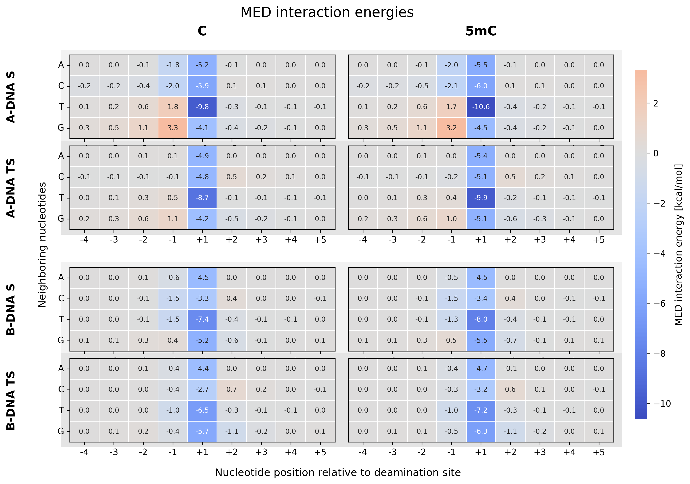
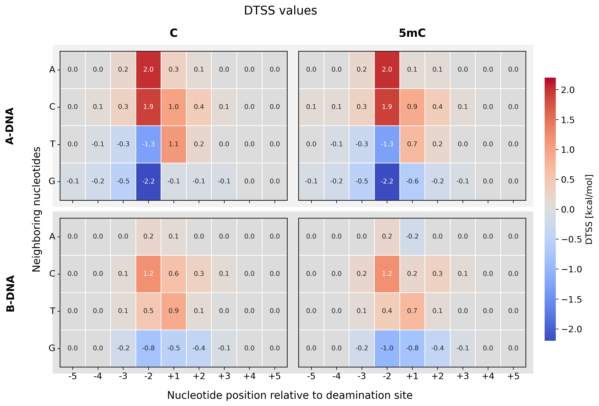
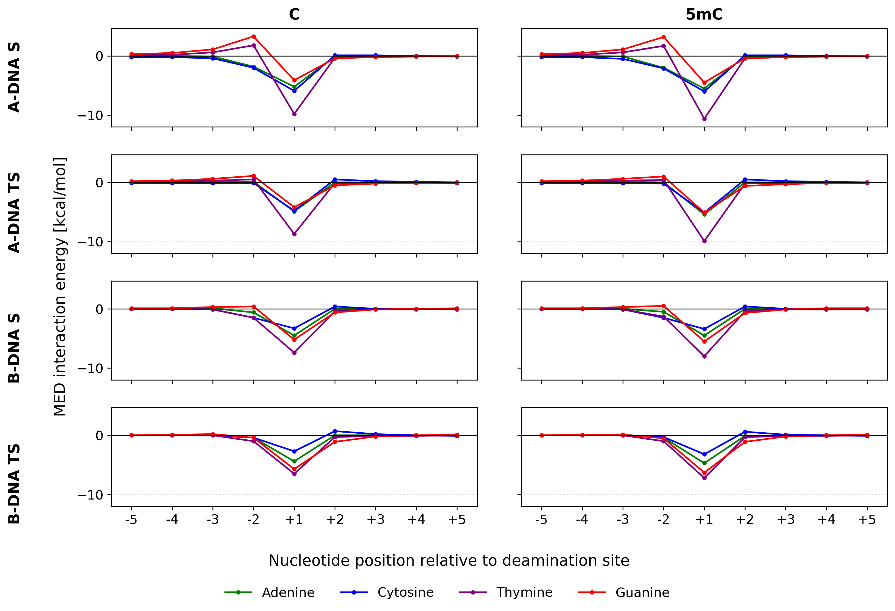
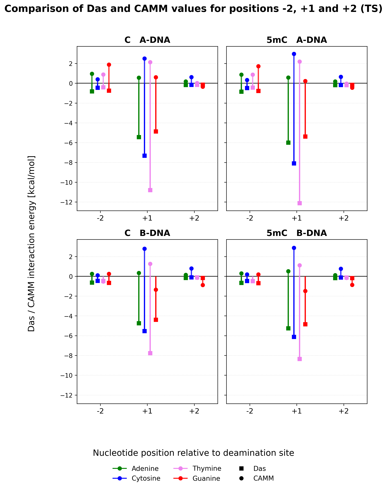
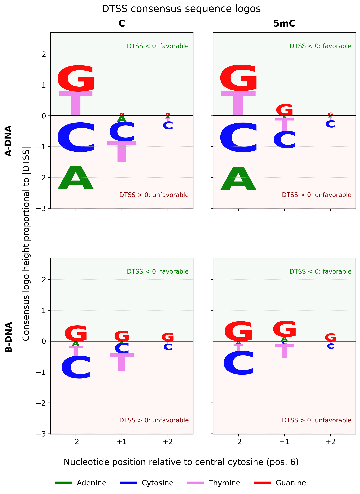
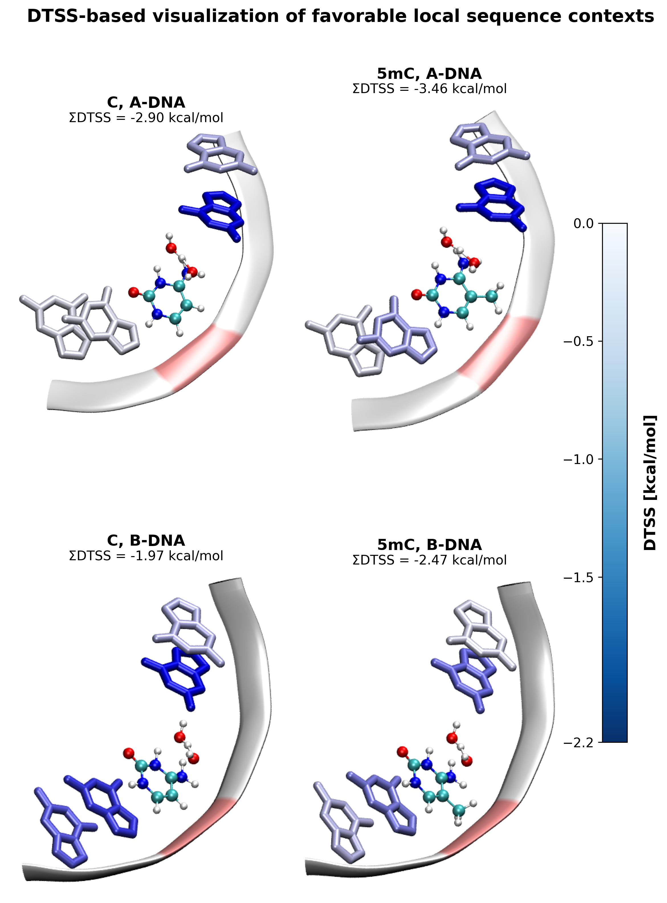

Analyze A-DNA and B-DNA
Compare the same sequence variants in two DNA geometries to test the influence of spatial arrangement.
Project 01 · Master's thesis
Computational chemistry project investigating how the local DNA sequence affects the hydrolytic deamination of cytosine and 5-methylcytosine using MED and DTSS calculations.
The project connects molecular modeling, quantum-chemical interaction analysis and Python-based data visualization to identify local sequence motifs that may favor deamination.

Research question
Instead of describing the whole reaction mechanism, this project focuses on one practical question: whether the local nucleotide environment can preferentially stabilize the transition state relative to the substrate.
Compare the same sequence variants in two DNA geometries to test the influence of spatial arrangement.
Evaluate cytosine and 5-methylcytosine deamination models using the same computational strategy.
Find neighboring nucleotides that stabilize the transition state and may lower the activation barrier.
Methodology
Selected substrate and transition-state models from Labet et al.
Generated A-DNA and B-DNA structures and prepared local single-nucleotide variants.
Calculated CAMM electrostatic contributions for interactions with neighboring bases.
Combined MED components and calculated DTSS values as MED(TS) − MED(S).
Created heatmaps, bar plots and interaction profiles to compare sequence effects.
Technologies
The project combines computational chemistry software with Python-based data analysis and reproducible file organization.
Automated data processing, MED and DTSS calculations, result organization and figure preparation.
Used for numerical operations and handling interaction energy values.
Used to organize MED, CAMM, Das and DTSS values into structured tables.
Used to generate heatmaps, energy profiles, bar plots and final result visualizations.
Used for visual inspection of DNA models and molecular structures during model preparation.
Used to prepare molecular figures and visually analyze selected substrate and transition-state structures.
Used for quantum-chemical calculations required to obtain CAMM electrostatic data.
Used as the multipole electrostatic component in MED interaction energy calculations.
Used to generate initial A-DNA and B-DNA structural models.
Used for file management, running calculations and organizing computational outputs.
Used for version control and keeping the project structure organized in the repository.
Results
The most important results are shown as heatmaps and interaction energy profiles. Together, they show how nucleotide identity and DNA conformation affect transition-state stabilization.



Visual summaries
These figures have a more vertical layout, so they are displayed separately in a three-column row.



Key findings
Neighboring nucleotides changed the interaction pattern around the reacting cytosine or 5-methylcytosine. The strongest effects were local and mainly involved positions close to the deamination site.
Guanine at position -2 showed the most negative DTSS values, indicating preferential stabilization of the transition state and a favorable local sequence context for deamination.
A-DNA produced larger DTSS amplitudes, suggesting that the same nucleotide environment can have a stronger or weaker effect depending on the spatial DNA framework.
The strongest MED interactions, especially close to the reaction center, were mainly driven by the Das dispersion component, while CAMM was more sensitive to nucleotide orientation and electrostatics.
Repository
The repository is organized to separate raw data, processed results, scripts, figures and documentation. This makes the analysis easier to reproduce and extend.
master-thesis/
├── README.md
├── data/
│ ├── MED_values.csv
│ └── DTSS_values.csv
├── notebooks/
│ └── exploratory_analysis.ipynb
├── python/
│ ├── med_analysis.py
│ ├── dtss.py
│ ├── heatmaps.py
│ ├── profiles.py
│ ├── statistics.py
│ ├── export_figures.py
│ ├── compare_ADNA_BDNA.py
│ └── interaction_components.py
├── figures/
├── workflow/
│ └── workflow.png
└── thesis.pdfPython scripts
Reads interaction energy data, combines CAMM and dispersion components, and saves MED values.
Calculates DTSS as the difference between transition-state and substrate interaction energies.
DTSS = MED(TS) − MED(S)
Generates MED and DTSS heatmaps for C and 5mC in A-DNA and B-DNA models.
Plots interaction energy profiles across nucleotide positions relative to the deamination site.
Exports final figures in consistent resolution and format for the thesis and portfolio page.
Compares energetic trends between A-DNA and B-DNA conformational frameworks.
Analyzes CAMM, dispersion and MED contributions to explain the physical origin of interactions.
Interactive preview
A lightweight static preview can show selected MED and DTSS values on hover without React or JavaScript.
Hover to view values
Hover to view values
Hover to view values
Challenges
Preparing comparable substrate and transition-state geometries at the reaction site.
Automating analysis across nucleotide positions, base identities and DNA conformations.
Separating the effect of nucleotide identity from the effect of DNA geometry.
What I learned